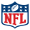

Navigation

Le National Football League Most Valuable Player Award (Prix du meilleur joueur de la NFL) est remis chaque année par différentes organisations, en particulier par l'Associated Press1, au meilleur joueur (Most Valuable Player) de football américain de la saison de la National Football League.
| Année | Vainqueur | Poste | Equipe |
|---|---|---|---|
| Saison 2010 | Tom Brady | Quaterback | Patriots de la Nouvelle-Angleterre |
| Saison 2011 | Aaron Rodgers | Quaterback | Packers de Green Bay |
| Saison 2012 | Adrian Peterson | Running back | Vikings du Minnesota |
| Saison 2013 | Peyton Manning | Quaterback | Broncos de Denver |
| Saison 2014 | Aaron Rodgers | Quaterback | Packers de Green Bay |
Comme on peut le voir, les quaterbacks sont majoritairement représentés dans les joueurs gagnant le titre de MVP. Mais il ne faut pas en oublier les autres joueurs qui sont tous aussi importants, comme le receveur vedette des Giants de New-York, Odell Beckam JR.